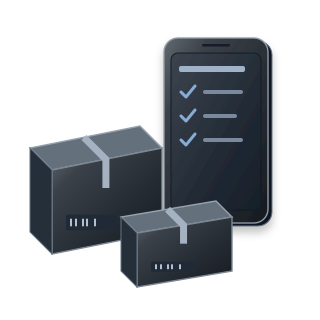
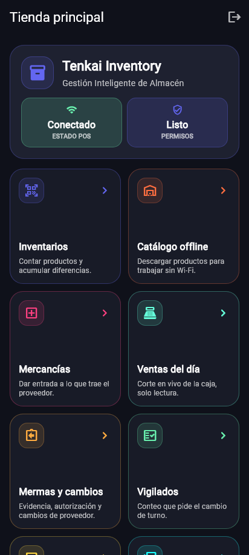
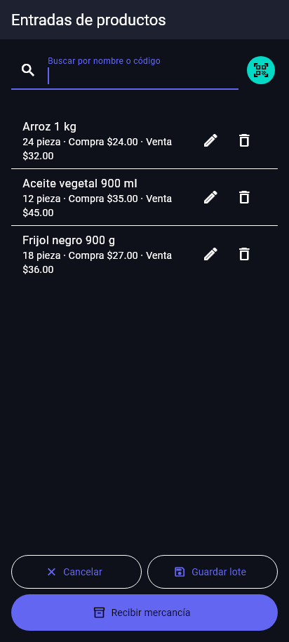
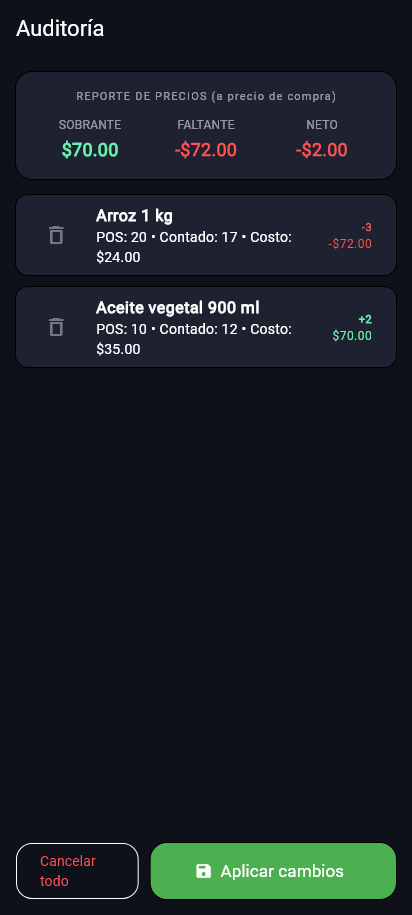
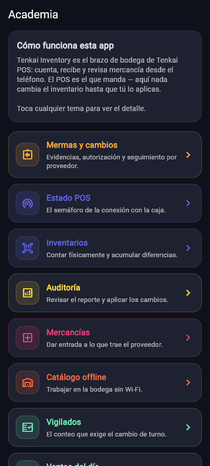

Manual de usuario
Android
Tenkai Inventory
De la preparación a la operación diaria. Elige un tema o sigue la guía en orden.
Las opciones pueden variar según la edición, los permisos y la versión instalada.
01 / 13
Preparar POS y el teléfono
Inventory necesita permiso de la tienda para trabajar con sus productos.
- En POS, habilita el inventario móvil y los módulos necesarios para recepción o almacén offline.
- Asigna al usuario los permisos de Inventory que va a utilizar.
- Conecta el celular al Wi-Fi de la tienda y deja POS abierto.
- Abre Inventory y espera que encuentre la tienda.
- Solicita la vinculación y aprueba el equipo correcto desde POS.
- Elige tu usuario y entra con su PIN.


Ampliar pantallaAcceso a mercancías, catálogo offline, conteos, auditoría e historial.
Pantallas de las aplicaciones con datos de demostración. La apariencia y las opciones pueden variar según versión, edición y permisos.
02 / 13
Elegir la tienda correcta
Cada perfil conserva su conexión, catálogo, lotes e historial.
- En la pantalla de conexión, selecciona la tienda.
- Crea o elige su perfil con un nombre que puedas reconocer.
- Vincúlalo al POS que corresponde.
- Antes de contar o preparar un lote, comprueba el nombre de la tienda.
03 / 13
Descargar el catálogo offline
Hazlo antes de salir a una bodega sin señal.
- Con el teléfono conectado y autorizado, abre Catálogo offline.
- Espera la confirmación de descarga y el número de productos guardados.
- Busca un artículo conocido para comprobar que aparece.
- Repite la descarga cuando se agreguen productos o cambien sus datos.
04 / 13
Preparar el surtido sin internet
El dueño captura la lista una sola vez, mientras selecciona la mercancía.
- Abre Mercancías en el perfil de la tienda que vas a surtir.
- Escanea o busca el producto del catálogo descargado.
- Captura la cantidad que realmente llevarás.
- Si agregas más del mismo artículo, revisa la suma en el renglón.
- Comprueba códigos, unidades, cantidades y costos cuando los captures.
- Guarda el lote para enviarlo después y pon un nombre reconocible.


Ampliar pantallaProductos y cantidades reunidos en un lote antes de enviarlo.
Pantallas de las aplicaciones con datos de demostración. La apariencia y las opciones pueden variar según versión, edición y permisos.
05 / 13
Llegar a la tienda y recibir el lote
La recepción se completa cuando POS confirma las cantidades que aplicó.
- Conecta el teléfono al Wi-Fi de la tienda y comprueba que POS esté abierto.
- Inicia sesión con el usuario autorizado si se solicita.
- Abre el lote pendiente y revisa su contenido contra la mercancía entregada.
- Envía el lote o usa Recibir mercancía y confirma.
- Espera la respuesta y revisa lo recibido; atiende cualquier renglón pendiente.
- Consulta el historial y, si lo necesitas, genera su PDF.
06 / 13
Si se pierde la confirmación
Un corte de red puede ocurrir después de que POS recibió la mercancía.
- Conserva el lote original y sus cantidades.
- Recupera la conexión con el mismo POS.
- Reintenta el envío pendiente para recuperar su confirmación.
- Revisa la respuesta y el historial antes de preparar otra recepción de esa mercancía.
07 / 13
Conteos, faltantes y sobrantes
Cuenta lo que hay físicamente y revisa la diferencia con POS antes de cambiar el inventario.
- Abre Inventarios y busca o escanea el producto. Confirma la unidad en que lo cuentas.
- Captura lo contado y revisa el renglón antes de seguir con otro artículo.
- Termina el recorrido y abre Auditoría. Revisa las diferencias positivas y negativas.
- Ejemplo: se registraron 20 piezas y contaste 17; hay un faltante de 3. Si contaste 22, hay un sobrante de 2.
- Comprueba el reporte de valor: usa el precio de compra de la mercancía, no el precio al que la vendes.
- Se aplica la diferencia del conteo. Ejemplo: POS marcaba 20 y contaste 17; el ajuste quita 3. Si después vendiste 2, las 18 registradas pasan a 15 al aplicar. Las ventas nuevas se conservan.
- Conecta con POS y aplica únicamente la auditoría revisada y autorizada. Comprueba la confirmación y el historial del teléfono.


Ampliar pantallaCompara lo registrado y lo contado. El reporte valora diferencias al costo de compra. Datos de demostración.
Pantallas de las aplicaciones con datos de demostración. La apariencia y las opciones pueden variar según versión, edición y permisos.
08 / 13
Elegir entre recepción y conteo
Usa el recorrido que corresponde a lo que estás haciendo.
- Mercancías: prepara y envía una entrega nueva. La cantidad enviada se suma a la tienda al confirmar la recepción.
- Inventarios: captura cuánto hay físicamente de un producto para compararlo con lo registrado.
- Auditoría: reúne y revisa diferencias del conteo antes de aplicar ajustes.
- Productos vigilados: captura la revisión que el dueño solicita para el cambio de turno.
- MED: registra una merma o un cambio con proveedor y sigue su autorización o su estado.
09 / 13
Conteo para el cambio de turno
POS define cuáles productos requieren seguimiento.
- Abre Vigilados.
- Cuenta físicamente cada producto de la lista.
- Registra y revisa las cantidades.
- Guarda el conteo para que POS lo use en el cambio de turno.
10 / 13
Mermas y cambios con proveedores
Disponible con los módulos y versiones compatibles.
- Activa los permisos correspondientes en POS y vuelve a iniciar sesión.
- En una merma, selecciona producto, cantidad, motivo y foto.
- Solicita la autorización del supervisor, encargado o dueño.
- En un cambio, selecciona proveedor y cantidad y sigue los estados pendiente, pedido y realizado.
- Reintenta las solicitudes guardadas si se interrumpe la conexión.
11 / 13
Consultar el turno en curso
Esta consulta es de solo lectura.
- Abre Ventas del día.
- Elige una caja si hay varias.
- Revisa el total y el efectivo esperado del turno que aparece.
12 / 13
Historial, comprobantes y Academia
El teléfono conserva las operaciones aplicadas desde ese equipo.
- Abre Historial y selecciona una recepción o auditoría.
- Comprueba fecha, usuario y renglones.
- Exporta el comprobante a PDF cuando lo necesites.
- Abre Academia para consultar instrucciones dentro de la app.


Ampliar pantallaExplicaciones de las tareas disponibles dentro de la aplicación.
Pantallas de las aplicaciones con datos de demostración. La apariencia y las opciones pueden variar según versión, edición y permisos.
13 / 13
Si no encuentra POS o falta una opción
Revisa conexión y permisos antes de volver a vincular.
- Comprueba que celular y POS estén en la misma red.
- Verifica que POS esté abierto y que el módulo móvil esté habilitado.
- Usa la opción de conexión directa con la dirección que muestra POS si la búsqueda no lo encuentra.
- Comprueba que el equipo esté aprobado y el usuario tenga permiso.
- Vuelve a iniciar sesión después de cambiar permisos.
Ayuda con tu instalación
Si un pendiente no se resuelve, conserva la operación y contacta a Tenkai con el nombre de la aplicación, versión y descripción del problema. Comparte capturas que no muestren accesos ni datos de clientes.
Contactar soporte